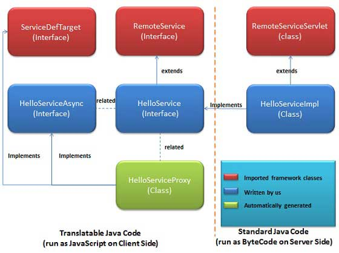
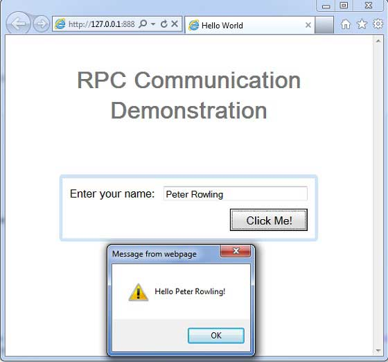

GWT - RPC Communication
A GWT based application is generally consists of a client side module and server side module. Client side code runs in browser and server side code runs in web server. Client side code has to make an HTTP request accross the network to access server side data.
RPC, Remote Procedure Call is the mechansim used by GWT in which client code can directly executes the server side methods.
GWT RPC is servlet based.
GWT RPC is asynchronous and client is never blocked during communication.
Using GWT RPC Java objects can be sent directly between the client and the server (which are automatically serialized by the GWT framework).
Server-side servlet is termed as service.
Remote procedure call that is calling methods of server side servlets from client side code is referred to as invoking a service.
GWT RPC Components
Following are the three components used in GWT RPC communication mechanism
A remote service (server-side servlet) that runs on the server.
Client code to invoke that service.
Java data objects which will be passed between client and server.
GWT client and server both serialize and deserialize data automatically so developers are not required to serialize/deserialize objects and data objects can travel over HTTP.
Following diagram is showing the RPC Architecture.
To start using RPC, we're required to follow the GWT conventions.
RPC Communication workflow
Step 1: Create a Serializable Model Class
Define a java model object at client side which should be serializable.
public class Message implements Serializable {
...
private String message;
public Message(){};
public void setMessage(String message) {
this.message = message;
}
...
}
Step 2: Create a Service Interface
Define an interface for service on client side that extends RemoteService listing all service methods.
Use annotation @RemoteServiceRelativePath to map the service with a default path of remote servlet relative to the module base URL.
@RemoteServiceRelativePath("message")
public interface MessageService extends RemoteService {
Message getMessage(String input);
}
Step 2: Create a Async Service Interface
Define an asynchronous interface to service on client side (at same location as service mentioned above) which will be used in the GWT client code.
public interface MessageServiceAsync {
void getMessage(String input, AsyncCallback<Message> callback);
}
Step 3: Create a Service Implementation Servlet class
Implement the interface at server side and that class should extends RemoteServiceServlet class.
public class MessageServiceImpl extends RemoteServiceServlet
implements MessageService{
...
public Message getMessage(String input) {
String messageString = "Hello " + input + "!";
Message message = new Message();
message.setMessage(messageString);
return message;
}
}
Step 4: Update Web.xml to include Servlet declaration
Edit the web application deployment descriptor (web.xml) to include MessageServiceImpl Servlet declaration.
<web-app>
...
<servlet>
<servlet-name>messageServiceImpl</servlet-name>
<servlet-class>com.tutorialspoint.server.MessageServiceImpl
</servlet-class>
</servlet>
<servlet-mapping>
<servlet-name>messageServiceImpl</servlet-name>
<url-pattern>/helloworld/message</url-pattern>
</servlet-mapping>
</web-app>
Step 5: Make the remote procedure call in Application Code
Create the service proxy class.
MessageServiceAsync messageService = GWT.create(MessageService.class);
Create the AsyncCallback Handler to handle RPC callback in which server returns the Message back to client
class MessageCallBack implements AsyncCallback<Message> {
@Override
public void onFailure(Throwable caught) {
Window.alert("Unable to obtain server response: "
+ caught.getMessage());
}
@Override
public void onSuccess(Message result) {
Window.alert(result.getMessage());
}
}
Call Remote service when user interacts with UI
public class HelloWorld implements EntryPoint {
...
public void onModuleLoad() {
...
buttonMessage.addClickHandler(new ClickHandler() {
@Override
public void onClick(ClickEvent event) {
messageService.getMessage(txtName.getValue(),
new MessageCallBack());
}});
...
}
}
RPC Communication Complete Example
This example will take you through simple steps to show example of a RPC Communication in GWT. Follow the following steps to update the GWT application we created in GWT - Create Application chapter:
| Step | Description |
|---|---|
| 1 | Create a project with a name HelloWorld under a package com.tutorialspoint as explained in the GWT - Create Application chapter. |
| 2 | Modify HelloWorld.gwt.xml, HelloWorld.css, HelloWorld.html and HelloWorld.java as explained below. Keep rest of the files unchanged. |
| 3 | Compile and run the application to verify the result of the implemented logic. |
Following is the content of the modified module descriptor src/com.tutorialspoint/HelloWorld.gwt.xml.
<?xml version="1.0" encoding="UTF-8"?> <module rename-to='helloworld'> <!-- Inherit the core Web Toolkit stuff. --> <inherits name='com.google.gwt.user.User'/> <!-- Inherit the default GWT style sheet. --> <inherits name='com.google.gwt.user.theme.clean.Clean'/> <!-- Inherit the UiBinder module. --> <inherits name="com.google.gwt.uibinder.UiBinder"/> <!-- Specify the app entry point class. --> <entry-point class='com.tutorialspoint.client.HelloWorld'/> <!-- Specify the paths for translatable code --> <source path='client'/> <source path='shared'/> </module>
Following is the content of the modified Style Sheet file war/HelloWorld.css.
body{
text-align: center;
font-family: verdana, sans-serif;
}
h1{
font-size: 2em;
font-weight: bold;
color: #777777;
margin: 40px 0px 70px;
text-align: center;
}
Following is the content of the modified HTML host file war/HelloWorld.html.
<html> <head> <title>Hello World</title> <link rel="stylesheet" href="HelloWorld.css"/> <script language="javascript" src="helloworld/helloworld.nocache.js"> </script> </head> <body> <h1>RPC Communication Demonstration</h1> <div id="gwtContainer"></div> </body> </html>
Now create Message.java file in the src/com.tutorialspoint/client package and place the following contents in it
package com.tutorialspoint.client;
import java.io.Serializable;
public class Message implements Serializable {
private static final long serialVersionUID = 1L;
private String message;
public Message(){};
public void setMessage(String message) {
this.message = message;
}
public String getMessage() {
return message;
}
}
Now create MessageService.java file in the src/com.tutorialspoint/client package and place the following contents in it
package com.tutorialspoint.client;
import com.google.gwt.user.client.rpc.RemoteService;
import com.google.gwt.user.client.rpc.RemoteServiceRelativePath;
@RemoteServiceRelativePath("message")
public interface MessageService extends RemoteService {
Message getMessage(String input);
}
Now create MessageServiceAsync.java file in the src/com.tutorialspoint/client package and place the following contents in it
package com.tutorialspoint.client;
import com.google.gwt.user.client.rpc.AsyncCallback;
public interface MessageServiceAsync {
void getMessage(String input, AsyncCallback<Message> callback);
}
Now create MessageServiceImpl.java file in the src/com.tutorialspoint/server package and place the following contents in it
package com.tutorialspoint.server;
import com.google.gwt.user.server.rpc.RemoteServiceServlet;
import com.tutorialspoint.client.Message;
import com.tutorialspoint.client.MessageService;
public class MessageServiceImpl extends RemoteServiceServlet
implements MessageService{
private static final long serialVersionUID = 1L;
public Message getMessage(String input) {
String messageString = "Hello " + input + "!";
Message message = new Message();
message.setMessage(messageString);
return message;
}
}
Update the content of the modified web application deployment descriptor war/WEB-INF/web.xml to include MessageServiceImpl Servlet declaration .
<?xml version="1.0" encoding="UTF-8"?>
<!DOCTYPE web-app
PUBLIC "-//Sun Microsystems, Inc.//DTD Web Application 2.3//EN"
"http://java.sun.com/dtd/web-app_2_3.dtd">
<web-app>
<!-- Default page to serve -->
<welcome-file-list>
<welcome-file>HelloWorld.html</welcome-file>
</welcome-file-list>
<servlet>
<servlet-name>messageServiceImpl</servlet-name>
<servlet-class>com.tutorialspoint.server.MessageServiceImpl
</servlet-class>
</servlet>
<servlet-mapping>
<servlet-name>messageServiceImpl</servlet-name>
<url-pattern>/helloworld/message</url-pattern>
</servlet-mapping>
</web-app>
Replace the contents of HelloWorld.java in src/com.tutorialspoint/client package with the following
package com.tutorialspoint.client;
import com.google.gwt.core.client.EntryPoint;
import com.google.gwt.core.client.GWT;
import com.google.gwt.event.dom.client.ClickEvent;
import com.google.gwt.event.dom.client.ClickHandler;
import com.google.gwt.event.dom.client.KeyCodes;
import com.google.gwt.event.dom.client.KeyUpEvent;
import com.google.gwt.event.dom.client.KeyUpHandler;
import com.google.gwt.user.client.Window;
import com.google.gwt.user.client.rpc.AsyncCallback;
import com.google.gwt.user.client.ui.Button;
import com.google.gwt.user.client.ui.DecoratorPanel;
import com.google.gwt.user.client.ui.HasHorizontalAlignment;
import com.google.gwt.user.client.ui.HorizontalPanel;
import com.google.gwt.user.client.ui.Label;
import com.google.gwt.user.client.ui.RootPanel;
import com.google.gwt.user.client.ui.TextBox;
import com.google.gwt.user.client.ui.VerticalPanel;
public class HelloWorld implements EntryPoint {
private MessageServiceAsync messageService =
GWT.create(MessageService.class);
private class MessageCallBack implements AsyncCallback<Message> {
@Override
public void onFailure(Throwable caught) {
/* server side error occured */
Window.alert("Unable to obtain server response: "
+ caught.getMessage());
}
@Override
public void onSuccess(Message result) {
/* server returned result, show user the message */
Window.alert(result.getMessage());
}
}
public void onModuleLoad() {
/*create UI */
final TextBox txtName = new TextBox();
txtName.setWidth("200");
txtName.addKeyUpHandler(new KeyUpHandler() {
@Override
public void onKeyUp(KeyUpEvent event) {
if(event.getNativeKeyCode() == KeyCodes.KEY_ENTER){
/* make remote call to server to get the message */
messageService.getMessage(txtName.getValue(),
new MessageCallBack());
}
}
});
Label lblName = new Label("Enter your name: ");
Button buttonMessage = new Button("Click Me!");
buttonMessage.addClickHandler(new ClickHandler() {
@Override
public void onClick(ClickEvent event) {
/* make remote call to server to get the message */
messageService.getMessage(txtName.getValue(),
new MessageCallBack());
}});
HorizontalPanel hPanel = new HorizontalPanel();
hPanel.add(lblName);
hPanel.add(txtName);
hPanel.setCellWidth(lblName, "130");
VerticalPanel vPanel = new VerticalPanel();
vPanel.setSpacing(10);
vPanel.add(hPanel);
vPanel.add(buttonMessage);
vPanel.setCellHorizontalAlignment(buttonMessage,
HasHorizontalAlignment.ALIGN_RIGHT);
DecoratorPanel panel = new DecoratorPanel();
panel.add(vPanel);
// Add widgets to the root panel.
RootPanel.get("gwtContainer").add(panel);
}
}
Once you are ready with all the changes done, let us compile and run the application in development mode as we did in GWT - Create Application chapter. If everything is fine with your application, this will produce following result:
